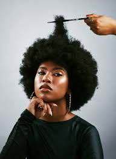
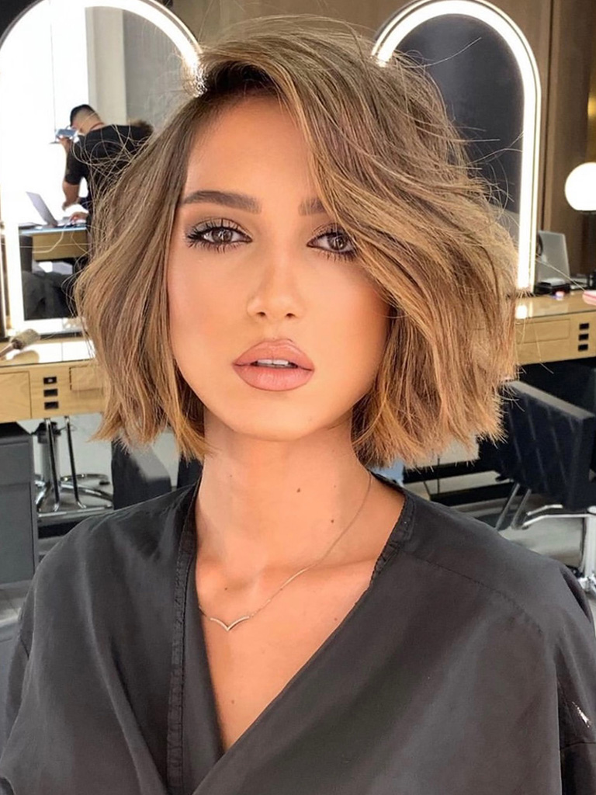
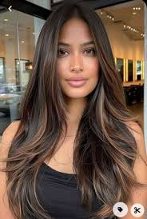

Meus projetos

Black Power
Símbolo de identidade e resistência. O Cabelo Black Power traz no volume e no formato a história do movimento negro.

Short Bob
Perfeito para quem curte um visual mais elegante, e surgil como uma variação do Long Bob e do tradicional Chanel

Butterfly Cut
É projetado para deixar um toque mais delicado, criando uma aprência fluida e cheia de movimento.